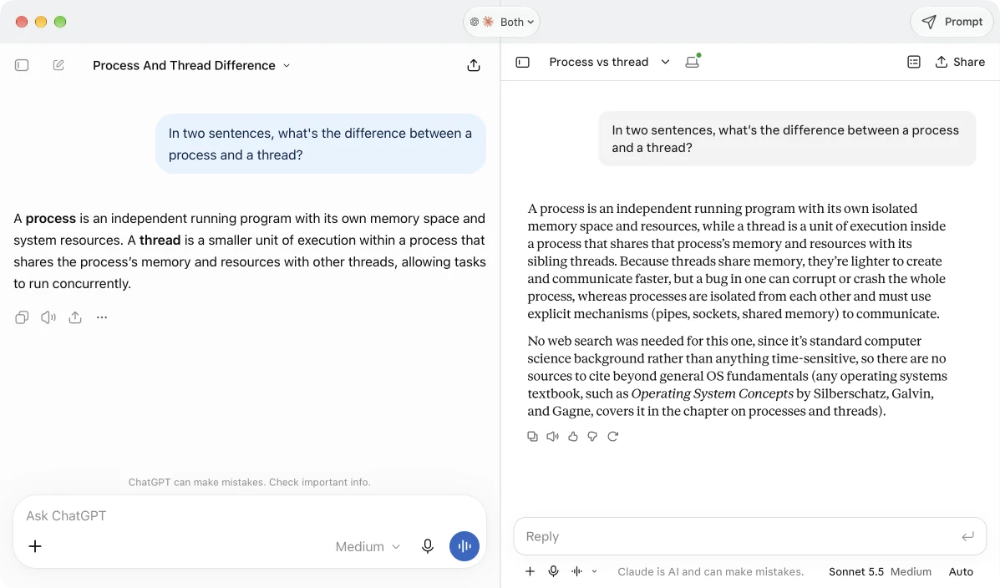
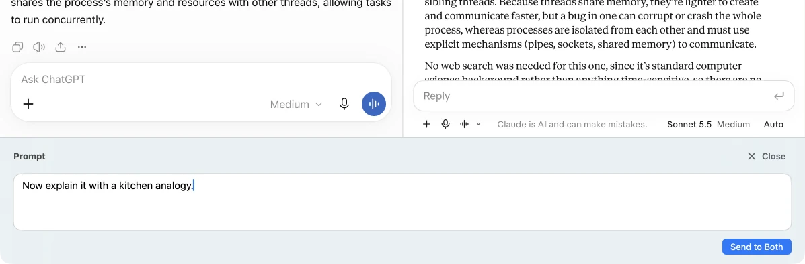
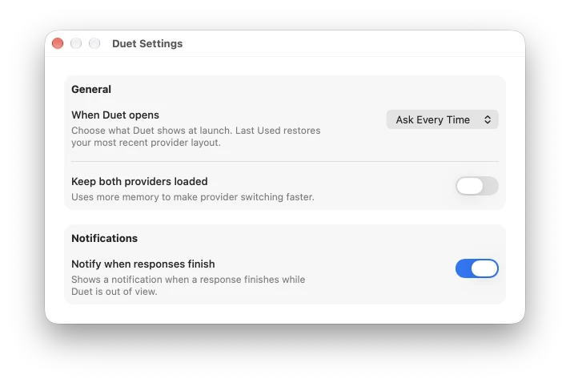

ChatGPT and Claude, side by side.
A native Mac app for using ChatGPT and Claude together, and sending one prompt to both.
Free · Version 2.3.0 · macOS 27 or later · Release notes

Quick Prompt
Ask from any app.
Press ⌃⌥Space wherever you are. Type a question, pick ChatGPT, Claude, or Both, and Duet opens a fresh conversation with each one.
It's also in Tools → Quick Prompt. If the workspace is hidden or minimized, Duet brings it back.
Features
Built around the official websites.
ChatGPT and Claude run in their own pages, so history, attachments, projects, and voice work the way you're used to. Duet adds the Mac parts.
One prompt, two answers
Open the prompt drawer with ⌘⇧P and choose Send to Both. Duet confirms each provider on its own, so a failed send never clears your draft.


Opens the way you work
Start at the chooser, at ChatGPT, Claude, or Both, or wherever you left off. Keep both providers loaded for instant switching, and get a notification when a response finishes while Duet is out of view.
Keyboard first
⌘1–3 switches between ChatGPT, Claude, and Both. ⌘N starts a new conversation, in both panes when split.
Adjustable split
Drag the divider to give one side more room, or choose View → Equal Widths.
Native files
Attach with the standard file picker and save generated files with a macOS save dialog.
Mac permissions
Microphone, camera, and location go through macOS prompts, and only for ChatGPT and Claude pages.
Your sign-in stays yours
Sign in with each provider, including passkeys and two-factor. Duet doesn't collect, store, or transmit your credentials.
Update notices
A banner tells you when a new release is out. Nothing downloads or installs on its own.
Get started
Up and running in a minute.
-
Download
Get Duet.zip from the latest release and double-click it to extract the app.
-
Install
Drag Duet.app to Applications and open it. macOS may ask you to confirm the first launch.
-
Sign in
Pick ChatGPT, Claude, or Both, and sign in to each provider's own page.
-
Tune it
In Duet → Settings, choose where Duet opens and how it switches.
License. Free for any use, including paid work. You can't sell Duet or redistribute it outside the license. Duet isn't affiliated with OpenAI or Anthropic; you need your own accounts, and each provider's terms apply. Read the license